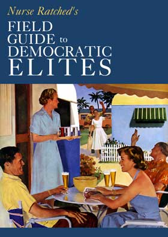

|

Field guide to Democratic elites
In reference to the recent memo from the leadership of the Democratic Leadership Council, in which they called Howard Dean supporters "activist elites", and with apologies to Jeff Foxworthy, I offer these self-assessment tools.
- - - - - - - - - -
by Nurse Ratched
You might be an "activist elite" Democrat according to the DLC if:
- You did not support unilateral military intervention in Iraq.
- You are concerned that the US may pull out of Iraq too soon, leaving the country -- and region -- unstable.
- You think that a tax cut that disproportionately favors the top 1% of Americans by income isn't the best way to stimulate the economy.
- You think Bush looked silly and/or callous jetting onto an aircraft carrier in a flight suit and keeping the hardworking sailors from seeing their families for another day after being on one of the US' longest deployments ever.
- You think it's a good idea -- and possibly an issue of national security in the face of biological and chemical weapons threats -- to provide those Americans who do not have health insurance with access to one or more publicly subsidized plans.
- You believe that truly supporting our troops means not taking billions of dollars from the budgets for the Veteran's Administration, veterans' pensions, and education for servicemembers' children.
- You think lowering the federal deficit and perhaps returning to the days of budget surpluses ought to be a federal priority.
- You think that unfunded mandates, such as Bush's "No Child Left Behind", are classic examples of federal fiscal irresponsibility and/or trampling of states' rights.
- You believe that what the people of America wants is as important as or more important than what the corporations of America want.
- You believe that gay civil unions, which allow for such things as registered domestic partners to inherit if their partner dies intestate or to be given the "next of kin" authority in medical decisions, do not threaten the lives and well-being of the future of our country.
- You are concerned about the implications of the USA PATRIOT Act and its potential succesor, PATRIOT II, and the fact that they (combined) essentially permit the government to spy on anyone at any time for any reason without judicial oversight.
- You or someone you know is likely to rely heavily on unstable Social Security for retirement income.
- You wanted the "Clear Skies" act to result in less, rather than more, air pollution.
- You believe the US needs to actively invest in development of alternative energy sources (such as fuel cells and thermal depolymerization) in order to reduce our dependency on both fossil fuel imports -- particularly from OPEC countries -- and the petrochemical conglomerates.
- You think a prescription drug benefit for Medicare to help seniors on fixed incomes is a good idea.
- You don't think minors should be questioned by the Secret Service or police without their parents, a lawyer, or both present.
- You think it is possible to balance civil liberties and civil defense without losing either one.
- You think that the Freedom of Information Act is an important tool and that the elctorate should be kept informed as to our government's actions.
- You think that, while social programs may have been poorly designed or administered, they are not inherently bad for our country.
- You think efforts to divide the country and encourage partisan squabbles are counterproductive.
- You think that repeated multi-million (or multi-billion) dollar bailouts of megaconglomerates while small business have difficulty getting funding at all run counter to the principles of laissez-faire economics and to capitalism in general.
- You think the United States needs to apply more common sense to its foreign policy.
- You think the Republican Party has moved from the right to the far right, and that the Democratic Party is mimicking them out of fear of losing votes and financial support.
- You think the Democratic Party in recent years has been too reactionary and needs to be more proactive in defining the issues in elections and politics in general.
- You think it's appalling that the United States ranks near the bottom in terms of educational system and healthcare for its citizens among first-world nations.
- You think it's shameful that the United States' press was ranked as "17th freest in the world," rather than first or possibly second.
- You think the United States should strive to set an example to the rest of the world as to how well a capitalist democratic republic can function, how free its citizens can be, how well it can take care of its citizens and vice versa, and how it can be a strong but compassionate leader in international politics.
You might be "elite" according to other Democrats if:
- You speak Latin or use Latin phrases either casually or professionally, with the exceptions of 'et cetera' and possibly 'carpe diem.'
- You are, cohabitate with, socialize with, or have direct communication lines to any politician on the state or federal level.
- You are, cohabitate with, socialize with, or have direct communication lines to any reporter, commentator, pundit, or analyst for a newspaper, television station, or radio station with an audience of greater than 100,000 people.
- Your household income places you in the top 10% of Americans by income.
- Your name would appear anywhere on a list of political party officials, at any level.
- You have ever given a four-figure or larger donation to any political party or candidate.
- You have a degree from any Ivy Leage college or a PhD from any North American, European, Australian, or Asian college.
- You have ever put your son or daughter on a waiting list to ensure that he or she can get into the "right" school.
- You pay more in taxes than the average American earns in a year.
- You know anyone over the age of 22 who goes by "Bootsie" or "Chip."
- You are acknowledged as an expert in any field.
- You have ever attended a cotillion or a polo match.
- You have ever organized or attended a black-tie fundraising event.

|